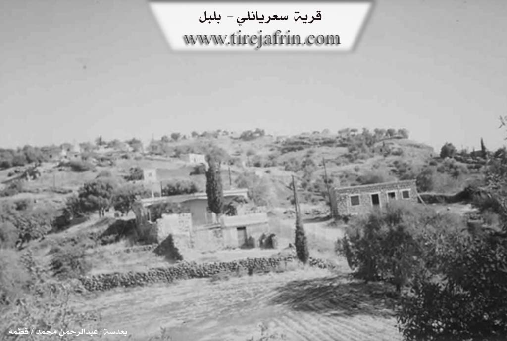

General Information
Nahiya (Subdistrict)
Bilbilê
Also Known As
Se'eriyê, Se'riyê, Si'iriya, المسعرة, سعريانلي, سعريو
Tribes
Biyan
Families, Clans, etc.
Hemzê Hemû, Hissadî, Mehmedî Bekû, Mihemedî Hec Mislim, Xelîl Weysû, Îsû
Photos

Basic Information about Si'iriya
Source: Ax û Welat
Foundation Date/Period: 600 to 700 years ago
Springs: Kaniya Teybê, Kaniya Sor, Kaniya Reş, Kaniya Dudê
Hills: Benê Sînik, Aniya Qulê
Ruins: Alkê
Wells: Aniya Bîrika
Other Landmarks: Geliyê Hêşîn, Geliyê Gula Alîka, Newala Sêba, Newala Çîlê, Geliyê Rêz û Gura, Baxçê Weyso, Bêdera Mistê Huso, Bêdera serê gazê, Bêdera çîmê çinare, Bêdera Weyso
Summaries
I. Summary from TirejAfrin Site (English) of Si'iriya
Villages of Bilbile District / bilbile
Sa'riyānlī (سعريانلي) - Si'iriya
===
According to the book 'جبل الكرد' 'Mountain of the Kurds' / Afrin City / Geographical Study:
Si'iriya, Sa'riyānlī (سعريانلي), Al-Masi'rah (المسعرة) /805N - 900m/:
- A village established on the eastern slope of Girê Çûçik Mountain (جبل Girê Çûçik). It is 1km away from Heyāmā village (قرية هياما) to the southwest.
According to the book 'عفرين .... نهرها ورؤابيها الخضراء' 'Afrin City .... Its River and Green Hills':
Sa'riyānlī (سعريانلي): A village in Kurdistan Mountain (جبل الكرد) belonging to Bilbile District (ناحية بلبل), Afrin City region (منطقة عفرين), Aleppo Governorate (محافظة حلب).
It is a small village located on top of a high mountain elevation with slopes descending from all sides except the northern side. Its soil is fertile limestone covered in parts with green basaltic rocks, 6km away from Bilbile town (بلدة بلبل). It is bounded to the north by a high mountain chain planted with forest trees and Bîk Oba Si village (قرية بيك أوبه سي) and Şinkillī village (قرية شنكلي), to the south by a slope and Sîlî Valley (وادي سيلي) and Bāqjah Qonaq village (قرية باقجة قوناق), to the west by a high mountain chain planted with forest trees and Kāwandah village (قرية كاوندة), and to the east by a slope and Sîlî Valley (وادي سيلي) and Za'rah village (قرية زعرة). The number of houses is approximately 20 houses, its age is approximately 400 years. Its old houses are stone-clay with wooden roofs. It has an electricity network and a mountain dirt road not paved to the village, and currently the Technical Services Directorate has improved the road well without paving. Most of its inhabitants work in cultivating olives, grains, and fruit trees such as walnuts and almonds, in addition to raising sheep and goats. The village drinks from spring water and from cisterns that collect rainwater.
Village headman: Rashīd Ḥamū Ḥamzah (رشيد حمو حمزة)
Sources:
- Book 'جبل الكرد' 'Mountain of the Kurds' (Afrin City) Geographical Study by Dr. Mohammed Abdo Ali (الدكتور محمد عبدو علي).
- Book: 'عفرين .... نهرها ورؤابيها الخضراء' 'Afrin City .... Its River and Green Hills' by writer Abdul Rahman Mohammed (عبدالرحمن محمد) from Qatmah village (قرية قطمه).
- Studies by Tîrêj Soft Center (مركز تيريج سوفت) / Abdul Rahman Haji Osman (عبدالرحمن حاجي عثمان)
- Some village residents.
Prepared and executed by: Tîrêj Afrin website manager: Abdul Rahman Haji Osman (عبدالرحمن حاجي عثمان)
20 / 12 / 2013
II. Summary of Si'iriya from Ax û Welat
Source: https://www.youtube.com/watch?v=Xs55yD0WtVw
The village of Si'riya (also referred to as Si'rek or Sari) is located in the Bilbil district of the Efrîn region, specifically in the Cûyê area. Situated on a small hill approximately 600 to 700 years ago, the village was originally located further west before moving to its current site. The community is exclusively Kurdish, belonging to the Biyan tribe, and is composed of six primary families, each with distinct migration histories.
The Hissadî family, considered one of the oldest, arrived from Gazê Linko. The Mihemedî Hec Mislim family (also referred to as the Hecî family) came from Qişleya Sinka in Hazra. Later arrivals include the Xelîl Weysû family from Eylê (also described as Kurba Şerqî across the Turkish border), and two families—Mehmedî Bekû and Hemzê Hemû—who migrated from the village of Hayam. The Îsû family originated from a nearby site called Alkê, which is now a ruin; their ancestors moved both up and down the valley before settling permanently in Si'riya.
Historically, the village was guided by respected elders such as Hec Omer (also known as Omerê Hissadî), Hemzê Hemû, and Mihmedê Hecî. The social structure was deeply communal, with residents recalling traditions where food was shared among all neighbors, particularly during religious occasions like the "Night of the Dead" (Şeva miriya) on Thursdays.
Geographically, Si'riya is surrounded by specific natural landmarks including valleys like Geliyê Hêşîn and Geliyê Gula Alîka, and springs such as Kaniya Teybê, Kaniya Sor, and Kaniya Reş. Due to the rugged, mountainous terrain and limited arable land for agriculture, the village developed a strong economy based on stone quarrying. Residents work as stonemasons, extracting and breaking distinctive black stone used for construction, a trade passed down from previous generations who worked in local quarries (meqle) supplying Aleppo and other cities.
In recent times, the village has established institutions named after local martyrs, including the Şehîd Silvana school and the Şehîd Cemîl commune. The education system now emphasizes the Kurdish language, a significant shift from the past, with teachers like Medya and Bêrîvan leading classes for the local children. The village remains a tight-knit community, balancing traditional agricultural pursuits, cultivating olives, apricots, and cherries, with the physical labor of the stone quarries.
II. Ax û Walat Book 2
SU’RIYA
25.12.2017
The village of Su’riya was built on a small hill and is affiliated with the Bilibilê district of the Reco area in the Efrînê canton.
The village of Su’riya is located 5 km northwest of the town of Bilbilê, and also 15 km northeast of the city of Reco, and 45 km from the city of Efrînê.
The two families of Hecî and Hisadî are the families that founded the village. The Hecî family came from the Sînka barracks in Hazira, and the Hisadî family came from the village of Gazê Linko.
109
The village of Su’riya consists of 112 houses, and nearly 1400 people live there. Also, nearly 50 families have settled in the city of Efrînê and live there.
The village consists of 5 families:
The families of Hesadî, Hecî, Weyso, Beko, Hemzê Hemo, and the Îso family.
All 5 of these families are from the Biya tribe.
The Weyso family came to the village of Su’riya from the village of Eliya, which is affiliated with Kilis in North Kurdistan. The two families of Hemzê Hemo Beko came from the village of Heyama, and the Îso family came from the village of Elkê.
To the east of the village are the Hişîn valley and the village of Heyama; to the south are the Gola Alîka valley, Eniya Bîrka, the Si’abe stream, the Çîlê stream, and the village of Qestelê Xidriya; to the west are the Sorik spring and the village of Bêxçe; and to the north of the village are the Kaniya Reş valley, the Sîsilk slope, the Rêz and Gura valley, Eniya Qolê, and the village of Elî Kera.
The people of the village of Su’riya make their living from agriculture and raising livestock. Olive fields and also
110
fruit trees such as apricot, peach, cherry, plum, and grapevines are the most important products that the villagers work on and sustain their lives with. Goats and sheep are the livestock that the villagers raise and provide for their needs with their products.
Many of the village's youth work in the institutions and bodies of the Autonomous Administration in Reco and Efrînê.
In the village of Su’riya, there are 4 threshing floors: the threshing floor of Mistê Heso, the threshing floor of Serê Gazê, the threshing floor of Çîmê Çinarê, and the threshing floor of Weyso.
In the village of Su’riya, there are 3 water springs: the Dudê spring, the Baxçê Weyîso spring, and the Tayê Biyê spring.
In the village, there are 5 martyrs.
Martyr Sîlvan, Martyr Cemal, Martyr Ferhad, Martyr Leyle, and Martyr Akif.
The village school was named after Martyr Sîlvan in 2015, and the village commune is named after Martyr Cemal.
Many famous and reputable social figures were from the village, such as Mihemed Hisadê, Mihê Hemzê, and Horîkê Çîlo.
Transcriptions and Subtitles
| Source | Video | Subtitles | Transcript |
|---|---|---|---|
| Ax û Welat 1 | Watch Video | Download SRT | View Transcript |
Foundation/Origin Information of Si'iriya
A village established on the eastern slope of Girê Çûçik Mountain.
Source: TirejAfrin Site
Possibly by people migrating from a nearby place called Se'erek. The inhabitants primarily belong to the Eşîra Biyo (Biyo Tribe). Early settling families mentioned include Malê Heso Diyê, Molla Mehemedî Hec Muslim, Molla Xelîl Wêsî (from Turkey), Molla Mehemedî Beko (from Heyamê), Hemze Hemûş Se'riyê (from Heyamê), the Îso family (from Gundê Olkê/Bêxçe Xerabî), Malbata Hecî (from Qişleya Sînka in Hezrezê), and Malbata Hesadî (from Gundê Gazê Lînko). Historically, the village, along with Heyamê, was owned by the Mexsûdî.
Source: Information Sources
The current settlement was established after the original village, which was situated in a valley below, was destroyed. The first families to establish the village, which was originally called Malê Heso Dîê, were six families from the Bîo tribe.
Source: Ax û Walat Transcript
Possible Village Name Meaning of Si'iriya
No information provided in this source.
Source: TirejAfrin Site
No information provided in this source.
Source: Information Sources
The village's name is said to originate from a historical figure named Se'erek, who was known for making coins ("dîlik").
Source: Ax û Walat Transcript